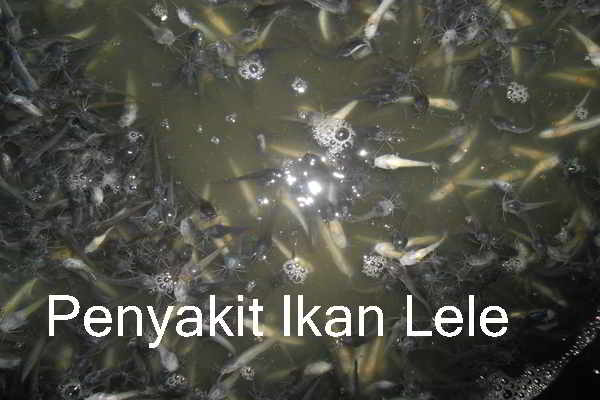
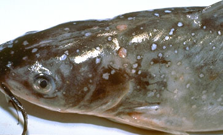
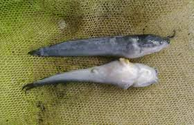
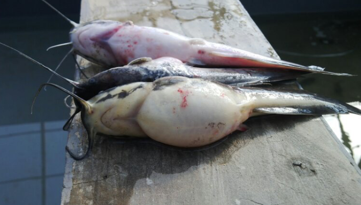
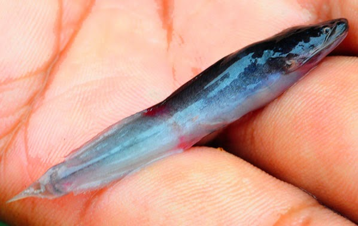

|
Penyakit pada Lele Dumbo

Hama dan penyakit ikan lele banyak ragamnya, beternak lele tanpa memperhitungkan resiko serangan hama dan penyakit akan membawa malapetaka.
Serangan hama dan penyakit ikan lele bisa dihindari dengan memperbaiki manajemen budidaya. Namun meskipun begitu, tetap saja masih ada faktor eksternal yang tidak bisa dielakkan 100 persen. Banyak hal-hal tidak terduga yang bisa terjadi ketika kita membudidayakan ikan lele.
Sumber hama dan penyakit ikan lele dari faktor internal, antara lain pengaturan pakan yang tidak tepat, benih yang membawa bibit penyakit, sampai pengaturan air yang buruk. Sedangkan dari faktor eksternal antara lain iklim, cuaca, sumber air, serangan wabah regional dan lain sebagainya.
Dalam beternak lele, hama merupakan gangguan yang bersumber dari organisme besar baik yang sifatnya predator, penggangu dan pesaing. Hama ikan lele yang bersifat predator adalah musang, linsang, dan ular. Di daerah perkotaan kucing pun kadangkala menjadi hama yang perlu di waspadai. Selain itu, ada juga katak yang merupakan predator bagi benih lele yang masih kecil.
Hama yang dikategorikan pengganggu adalah belut, terutama untuk yang beternak lele di kolam tanah. Binatang ini seringkali membuat lubang di pematang sehingga kolam bocor. Hama yang dikategorikan pesaing adalah Ikan gabus atau mujair, karena ikan ini bisa berkembang biak dalam kolam melalui saluran masuk atau keluar air.
Penanggulangan dari serangan hama bisa dilakukan dengan berbagai hal seperti memagari pinggiran kolam, menyaring jalan masuk dan keluar air, sampai menutup kolam dengan paranet. Apabila kita beternak lele secara intensif, biasanya gangguan hama jarang terjadi karena kolam relatif terawasi terus menerus.
Penyakit ikan lele
hampir sama dengan penyakit yang ditemui pada ikan tawar lainnya. Penyakit yang biasa menyerang terdiri dari penyakit infeksi yang disebabkan jamur, protozoa, bakteri dan virus. Berikut beberapa penyakit ikan lele yang disebabkan oleh infeksi:
-
Penyakit bintik putih (white spot), penyebabnya adalah protozoa dari jenis Ichthyphyhirius multifillis. Penyakit ini menyerang hampir semua jenis ikan air tawar. Pada ikan lele banyak menyerang benih. Bintik-bintik putih tumbuh pada permukaan kulit dan insang. Bila terkena ikan akan mengosok-gosokkan badannya ke dinding atau dasar kolam. Peyakit ikan lele ini dipicu oleh kualitas air yang buruk, suhu air terlalu dingin dan kepadatan tebar ikan yang tinggi. Untuk mencegah agar ikan tidak terkena white spot, pertahankan suhu air pada kisaran 28oC dan gunakan air yang baik kualitasnya. Pengobatan untuk jenis penyakit ikan lele ini antara lain dengan cara merendam ikan dalam larutan formalin 25 cc per meter kubik air ditambah dengan malacit green 0,15 gram per meter kubik air selama 24 jam. Pada ikan lele yang sudah besar, penyakit ini juga bisa dihilangkan dengan memindahkan ikan ke kolam dengan suhu 28oC.
-
Penyakit gatal (Trichodiniasis) disebabkan oleh protozoa jenis Trichodina sp. Gejala penyakit ikan lele Trichodiniasis adalah ikan terlihat lemas, warna tubuh kusam dan sering menggosok-gosokan badannya ke dinding dan dasar kolam. Penyakit ikan lele ini menular karena kontak langsung dan juga lewat perantara air. Kepadatan ikan yang terlalu tinggi dan kekurangan oksigen disinyalir memicu perkembangannya. Penyakit ikan lele ini bisa dicegah dengan mengatur kepadatan tebar dan menjaga kualitas air. Penyakit ini bisa dihilangkan dengan merendam ikan dalam larutan formalin 40 ppm selama 12-24 jam.
-
Serangan bakteri Aeromonas hydrophila. Penyakit ikan lele yang ditimbulkan bakter ini menyebabkan perut ikan menggembung berisi cairan getah bening, terjadi pembengkakan pada pangkal sirip dan luka-luka disekujur tubuh ikan. Faktor pemicu penyakit ikan lele ini adalah penumpukan sisa pakan yang membusuk di dasar kolam. Untuk mencegahnya, upayakan pemberian pakan yang lebih tepat dan pertahankan suhu air 28oC. Pengobatan yang paling umum pada ikan benih adalah pemberian antibiotik Oksitetrasiklin (OTC). Caranya dengan mencampurkan OTC dengan pakan, takarannya 50 mg per kg pakan. Berikan selama 7-10 hari. Apabila penyakit ikan lele ini menyerang kolam pembesaran, gantilah air kolam dua kali sehari. Pada saat penggantian air, tambahkan garam dapur dengan takaran 100-200 gram per meter kubik.

-
Penyakit Cotton wall disease, penyebabnya bakteri Flexibacter Columnaris. Bakteri ini menyerang organ dalam seperti insang. Gejala yang ditimbulkannya adalah terjadi luka atau lecet-lecet pada permukaan tubuh, ada lapisan putih atau bintik putih, gerakan renang lambat dan ikan banyak mengambang. Faktor pemicunya adalah pembusukan sisa pakan didasar kolam dan suhu air yang naik terlalu tinggi. Pencegahannya dengan mengontrol pemberian pakan dan mempertahankan suhu air pada 28oC. Apabila ada anggaran lebih, berikan vaksin pada benih ikan. Utuk mengobati penyakit ikan lele adalah dengan memberikan OTC 50 mg per kg pakan yang diberikan 7-10 hari. Cara lainnya, rendam ikan dalam larutan OTC dengan dosis 3-5 ppm selama 12-24 jam. Ikan lele yang diberi antibiotik baru bisa dikonsumsi setelah dua minggu.
-
Penyakit karena serangan Channel catfish virus (CCV). Virus ini tergolong kedalam virus herpes. Ikan yang terinfeksi tampak lemah, berenang berputar-putar, sering tegak vertikal di permukaan, dan pendarahan dibagian sirip dan perut. Faktor pemicu penyakit ikan lele ini adalah fluktuasi suhu air, penurunan kualitas air dan kepadatan tebar yang tinggi. Untuk mencegah serangan virus ini adalah dengan cara memperbaiki manajemen budidaya, menjaga kebersihan kolam dan pemberian pakan yang berkualitas. Pengobatan ikan yang telah terinfeksi jenis virus ini belum diketahui. Namun penyakit ikan lele ini bisa pulih dengan meningkatkan kebersihan kolam seperti mengganti air kolam hingga ikan terlihat pulih.
Selain penyakit ikan lele di atas, terdapat juga sejumlah penyakit yang bukan disebabkan oleh infeksi melainkan disebabkan oleh kondisi lingkungan, seperti keracunan dan lain sebagainya. Berikut beberapa penyakit non-infeksi yang penting diketahui dalam beternak lele:
-
Penyakit kuning (Jaundice), penyakit ini akibat dari kesalahan nutrisi pakan. Penyebabnya antara lain kualitas pakan yang buruk, seperti telah kadaluarsa atau pakan disimpan di tempat lembab sehingga pakan rusak. Beberapa keterangan mengatakan jaundice bisa disebabkan oleh pemberian jeroan atau ikan rucah secara kontinyu. Keterangan lain mengatakan serangan jaundice bisa datang apabila dalam air kolam banyak terdapat alga merah.
-
Pecah usus atau Reptured Intestine Syndrom (RIS). Penyakit ikan lele ini terlihat dari gejalanya yang khas yaitu pecahnya usus. Penyebabnya adalah pemberian pakan yang berlebihan. Ikan lele merupakan ikan yang rakus, berapapun pakan yang kita berikan akan disantapnya sehingga akan memecahkan usus bagian tengah atau belakang. Untuk menghindarinya, lakukan pengaturan pemberian pakan yang efektif. Kebutuhan pakan ikan lele per hari adalah 3-6% dari berat tubuhnya dan harus diberikan secara bertahap, pagi, siang, sore atau malam hari.
-
Kekurangan vitamin, kasus kekurangan vitamin yang paling sering pada ikan lele adalah kekurangan vitamin C. Kekurangan vitamin ini akan mengakibatkan tubuh ikan bengkok dan tulang kepala retak-retak. Apabila terlihat penyakit ikan seperti ini, berikan vitamin mix yang banyak dijual di pasar. Dosisinya 1 gram per kg pakan lele diberikan selama 5-7 hari.
-
Penyakit keracunan, penyakit ini ditimbulkan karena faktor lingkungan seperti air yang tercemar pestisida, atau akibat kimia industri lainnya. Untuk menanggulanginnya, usahakan penggantian air kolam minimal sebanyak 20% setiap dua kali sehari.
|